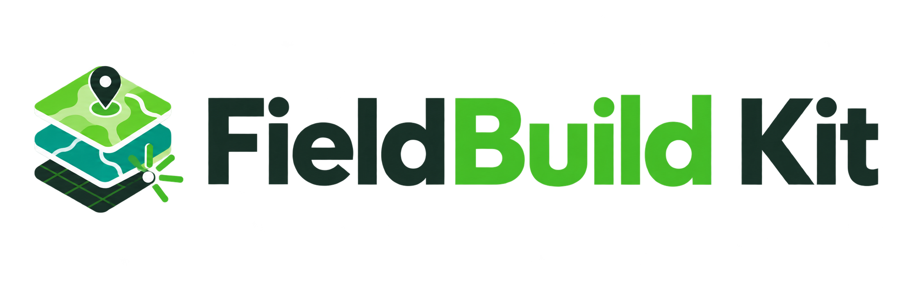

STANDALONE DESKTOP APP
FieldBuild Kit
내장 템플릿과 생성 엔진으로 레이어·폼·관계·좌표계를 자동 구성합니다.

QGIS 호환 조사 프로젝트를 자동 생성하고, QField로 현장 기록하는 독립 실행형 데스크톱 앱
앱 다운로드 · GitHub Releases
생태조사 담당자가 필요한 것은 ‘정확한 기록’이지, 매번 새로 만드는 데이터베이스가 아닙니다.
기존 상위 폴더를 고르면 그 안에 새 프로젝트 폴더가 자동으로 만들어집니다.

조사 유형에 따라 생성되는 레이어와 상하위 관계가 달라집니다.

사이트가 필요한 조사 유형에서만 나타나는 단계입니다.

앱에 분류·분포 자료를 내장하지 않고, 사용자가 가진 로컬 파일을 선택적으로 지정합니다.

조사 지역의 통신 상태와 필요한 지도 수준에 맞춰 선택합니다.

이번 프로젝트의 모든 포인트와 폴리곤 레이어에 한 번에 적용됩니다.

이전 단계에서 선택한 값을 한 화면에서 검토한 뒤 생성 버튼을 누릅니다.